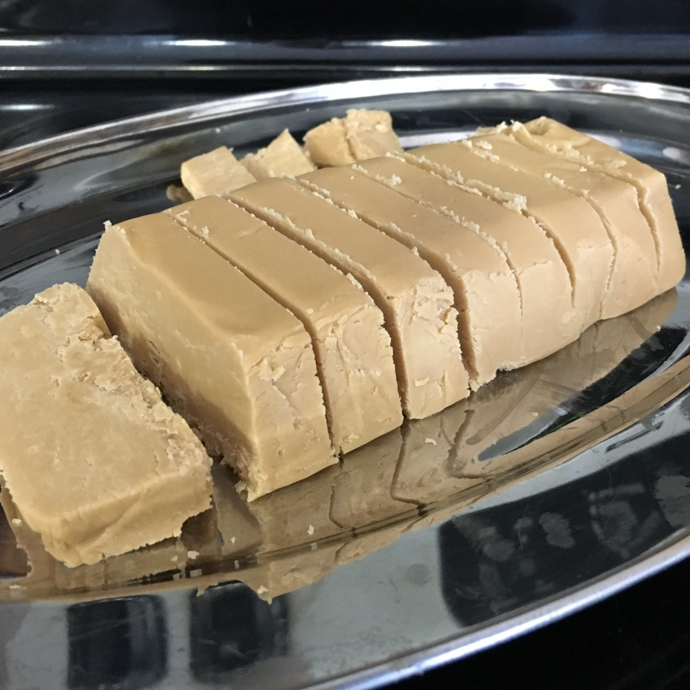

Maple Fudge
Home

Description
You know what fudge is.
Ingredients
- 1 cup heavy cream
- 1 cup sugar
- 1 cup lightly packed brown sugar
- 1/2 cup maple syrup
- 2 tbsp corn syrup
- 1/2 tsp vanilla extract
Steps
- Line 8in square pan with parchment paper.
- In a heavy saucepan, bring all ingredients except vanilla to a boil, and stir until sugar is dissolved.
- Let simmer without stirring until candy thermometer placed in centre reads 240℉.
- Remove from heat and add vanilla without stirring.
- Place the pan in a water bath and let cool without stirring until the thermometer reads 110℉.
- Remove pan from water and beat the mixture until it thickens and loses its gloss.
- Immediately pour into the prepared pan and let cool for about 1 hour.